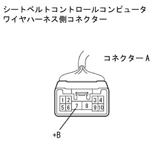

DTC B2036/22 PSB ECU Malfunction12 |
| DTC No. | DTC Detection Condition | Inspection Area |
|---|---|---|
| B2036/22 |
|
|
| Step 1 | Inspect Power Source Voltage (+B Terminal Voltage) |
Disconnect seat belt control computer connector A.
 |
Using SST (Toyota electrical tester), measure the voltage between the terminals of the seat belt control computer vehicle side wire harness. (For Terminals of ECU, see)
| Tester Connection | Condition | Standard |
|---|---|---|
| 7 (+B) - Body ground | Always | 11 to 14 V |
|
| ||||
| OK | ||
| ||